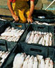

Aujourd'hui, la pêche est engagée dans une spirale infernale : investissements de plus en plus lourds de l'Europe, développement de la pêche industrielle, surexploitation des stocks, suppression de milliers d'emplois en Europe (66 000 emplois en 8 ans).
Si l'on ne s'engage pas des maintenant dans une gestion durable de la ressource, c'est la pêche toute entière qui est vouée a disparaître.
Dans ce contexte, la réforme de la PCP, engagée cette année, est une formidable occasion de réorganiser le secteur.
Pour Le WWF, la meilleure politique sera celle assurée, à terme, par des pêcheurs responsables, ayant les moyens d’assurer leur avenir professionnel, la survie des océans et celle des populations qui en dépendent.
Dans le cadre de la campagne menée par le WWF International, le WWF France s’implique sur la pêche depuis avril 2002 avec, pour objectifs :
|
 |
L'intérêt du WWF et celui des pêcheurs est le même : qu'il y ait des poissons dans la mer. Or, il n’y a aucune fatalité à la dégradation permanente du secteur de la pêche. Des solutions existent pour mettre en place une pêche durable et responsable, en trouvant l’équilibre entre la préservation de la ressource et la préservation de l’emploi. Qu’attendons-nous pour agir ?